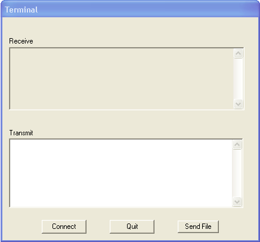

Port
Select
the host PC serial port connected to BOB-4/XBOB-4.
Baud
Rate
Select the
baud rate for communication with BOB-4's main serial port. Default is
9600 bps. This value must match the rate currently in use by BOB-4,
unless communication is through BOB-4's debug port. Baud rate
selection is inactive for the debug port because it's fixed by design
to 115.2 kbps in BOB-4. In XBOB-4, the debug port is only available
internally (not on the rear panel).
Download
Font (main port): Download custom font to BOB-4 through the BOB-4 main serial port.
Font (debug port): Download custom font to BOB-4 through the BOB-4 debug serial port.
Firmware (main port): Download firmware upgrade to BOB-4 through the BOB-4 main serial port. See Firmware Upgrades.
Firmware (debug port): Download firmware upgrade to BOB-4 through the BOB-4 debug serial port. See Firmware Upgrades.
Firmware (repair): This option allows the user to download new firmware even if the current firmware is corrupted and nothing but BOB-4's bootloader is operating. To confirm this condition, connect to either the main or debug serial port at 115.2 kbps using a terminal program. At power up, the BOB-4 bootloader emits: BOB4 boot loader (s: 4.1.2)Close the connection to the terminal program before proceeding. In the Serial menu, make sure that the correct PC COM port is selected. The Baud Rate setting doesn't matter in this case because BOB-4's bootloader operates only at 115.2 kbps. Select Serial-->Download-->Firmware (repair). Select the desired BOB-4 firmware file (B4Vxxx.enc) in the Open File dialog when it appears. When the download is complete, BOB-4 resets itself and launches the new firmware.
Terminal
Opens a simple serial communication terminal emulator. Clicking the "Connect" button opens the currently selected PC COM port at the current baud rate setting. If the port is successfully opened, then button text changes to "Disconnect." Clicking the button again closes the port.
Text typed into the Transmit window is transmitted over the serial port to BOB-4. Messages received from BOB-4 are displayed in the Receive window. Escape <ESC> is sent by pressing the keyboard "Esc" key. The "Enter" key sends Carriage Return <CR> and Line Feed <LF> to BOB-4.
